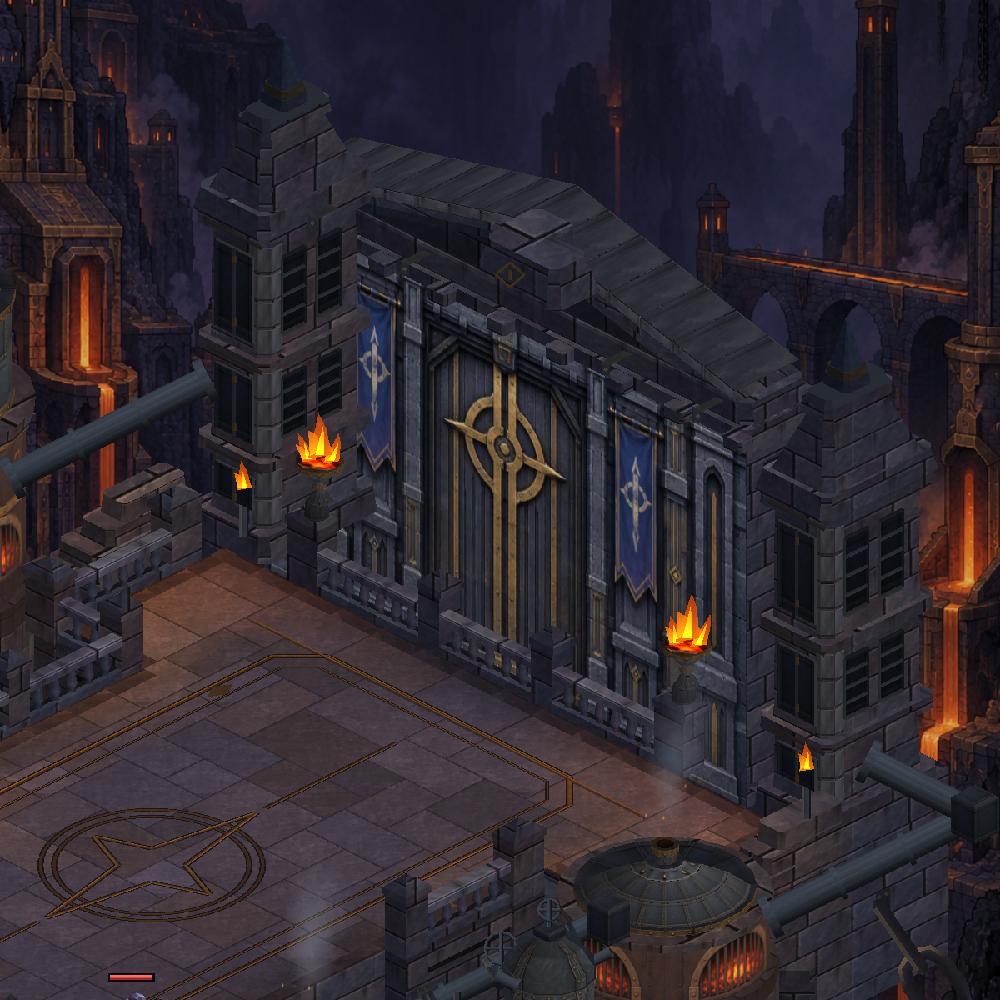
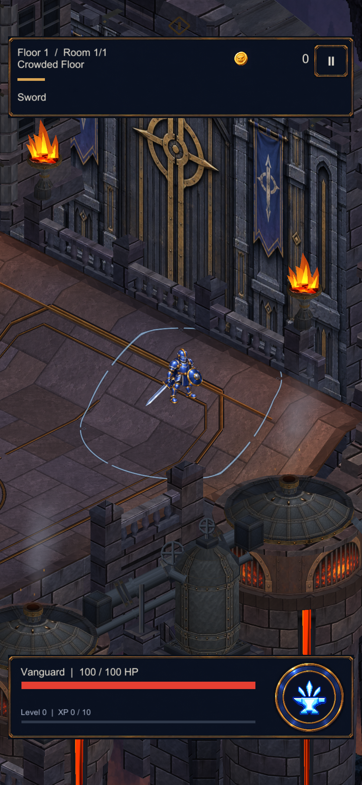
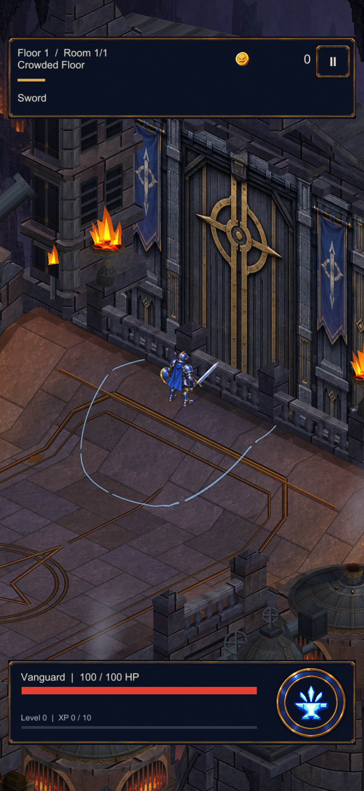
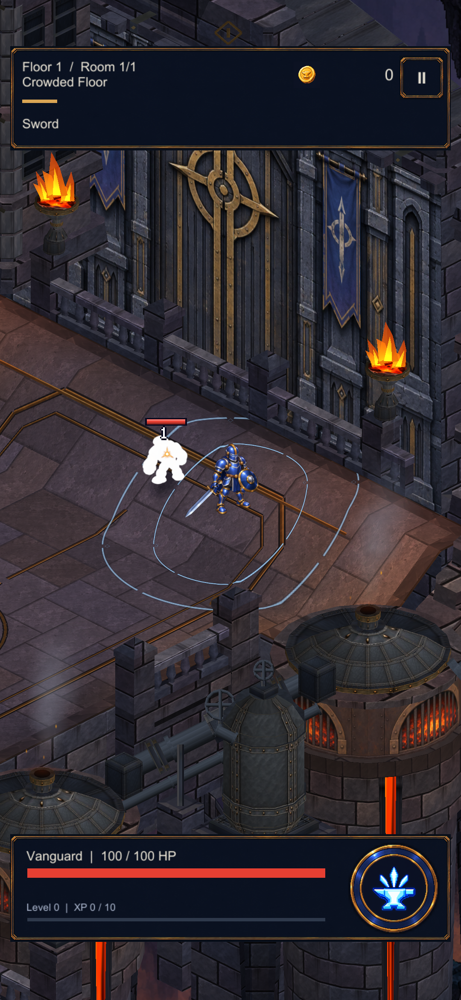
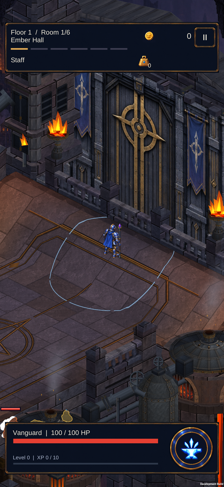
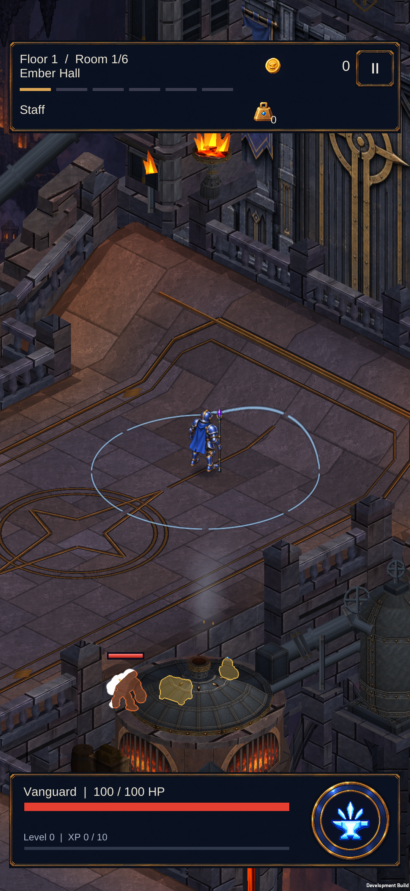
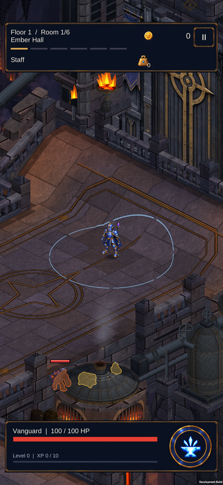
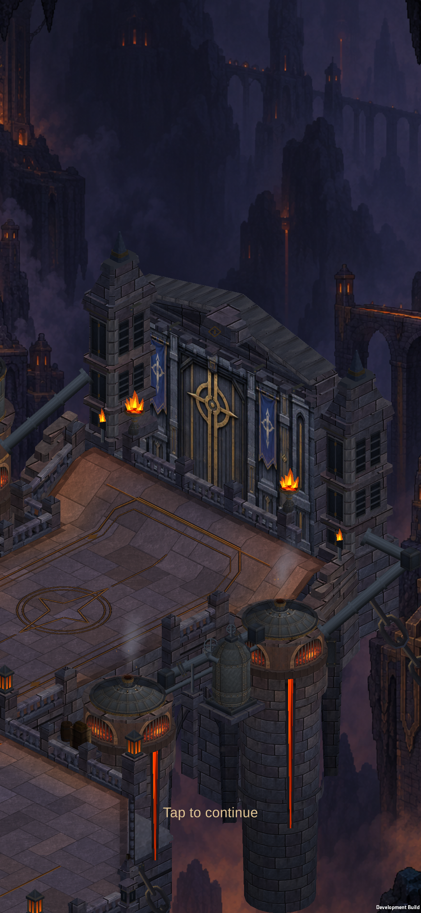
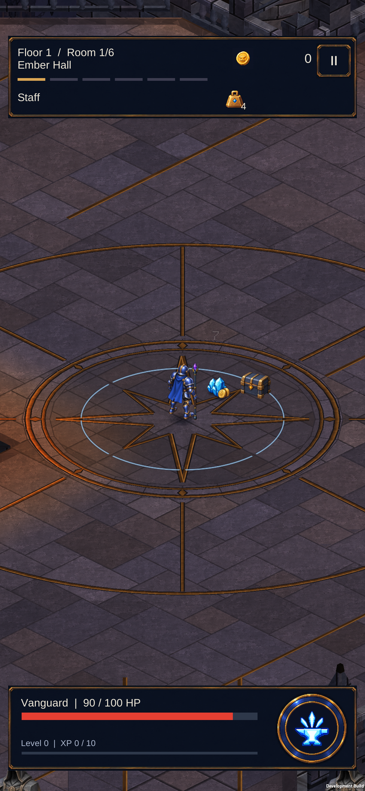

Kapı terası: zemin, karakter ve kamera birlikte yükseliyor
Gerçek Unity ve S23 görüntüleri. İki tasarım birimlik rampa 1,25 görsel birim yükseliyor. Halka ve gölgeler eğimi izliyor; savaş mesafeleri ve hareket sınırları korunuyor. Referansın tüm görsel kalitesinin tamamlandığı anlamına gelmez.

Önce — düz kapı yaklaşımı Sonra — yükselen yaklaşım ve teras
Sonra — yükselen yaklaşım ve terasUnity oyun kamerası

Rampada karakter, gölge ve yetenek halkası
Üst sahanlık ve kameranın yükseklik takibiEfekt ve cihaz kanıtı
Unity efekt karesi inceleme için sahnelenmiştir: gerçek hasar olayı ve üretim yetenek görseli çağrılır. S23 kareleri gerçek sürükleme hareketlerinden alınmıştır.

Unity — rampada hasar ve alan efekti
S23 — üst kapı eşiği
S23 — rampaya giriş
S23 — inişNormal koşu

S23 — normal koşunun başlangıcı
S23 — Staff savaşı ve ödüllerBütün harita

395 .NET, 415 EditMode ve 148 PlayMode testi geçti. APK telefona yüklendi; profil korundu. Ekran görüntüsüz kısa tekrarda açılış sonrası 59,5–59,9 fps görüldü. İlk incelemedeki tek 166,9 ms karenin nedeni henüz ayrıştırılmadı; uzun süreli performans iddiası yok.
Tam harita · Doğrulama ve kapsam · Ölçüm pencereleri